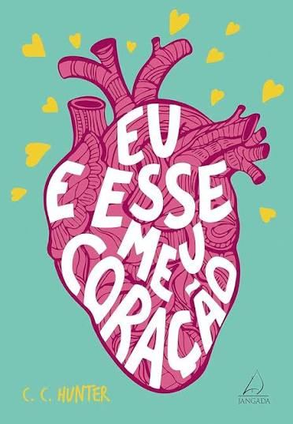
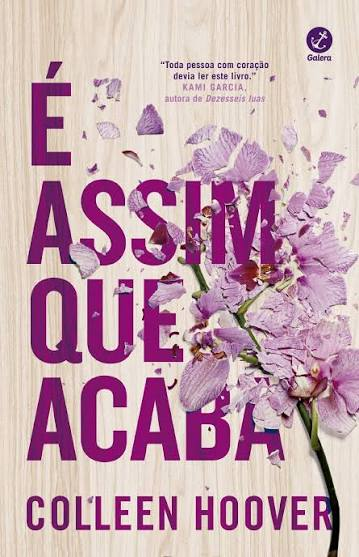
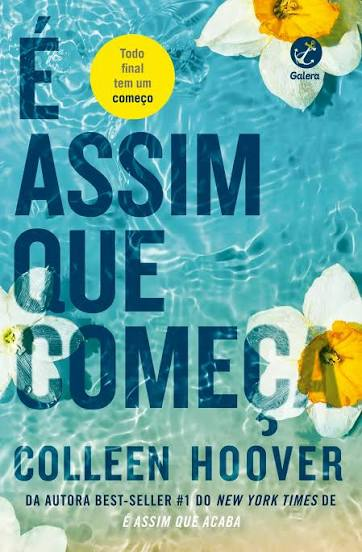
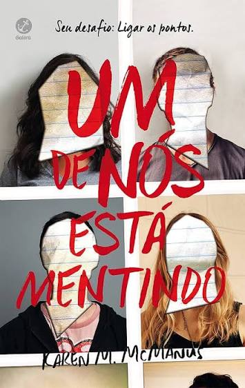
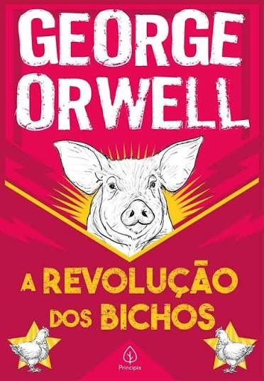

.jpeg)
Emanuelly Burnagui



A história de C.C. Hunter, "Eu e Esse Meu Coração", acompanha Leah, uma adolescente com um coração artificial que recebe o transplante do colega Eric. Assombrada por sonhos sobre a morte de Eric, ela e o irmão dele, Matt, investigam o suposto suicídio. Juntos, eles desvendam a verdade sobre o crime e se apaixonam.

Lily enfrenta um casamento abusivo com Ryle, encontrando forças para quebrar o ciclo de violência após o retorno de seu primeiro amor, Atlas, e o nascimento de sua filha, optando pelo divórcio para garantir sua segurança e a de sua filha.

É Assim que Começa", de Colleen Hoover, narra o desenrolar do relacionamento entre Lily e Atlas após os acontecimentos de "É Assim que Acaba". A história foca no desenvolvimento do casal enquanto lidam com as inseguranças de Ryle e os desafios familiares de Atlas.
A Hipótese do Amor, acompanha a doutoranda Olive Smith, que beija por impulso o temido professor Adam Carlsen para convencer uma amiga de que superou um antigo romance. Eles decidem manter um namoro de mentira por conveniência mútua, mas a farsa acaba se transformando em sentimentos reais.

Um de Nós Está Mentindo, fala sobre cinco estudantes do ensino médio que entram juntos na detenção, mas apenas quatro saem vivos. Simon, o criador de um aplicativo de fofocas da escola, é assassinado antes de revelar segredos comprometedores dos outros quatro colegas — transformando todos eles nos principais suspeitos do crime.

A Revolução dos Bichos, é uma história sobre os animais de uma fazenda que se rebelam e expulsam seus donos humanos para criar uma sociedade igualitária. No entanto, os porcos logo assumem o poder e se tornam tão corruptos e tirânicos quanto os antigos opressores, provando como o poder absoluto corrompe.